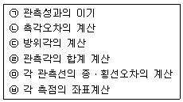
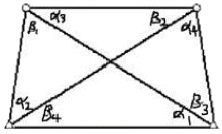
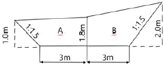
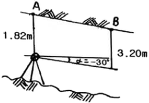
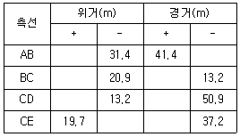
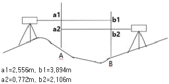
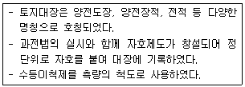

1과목: 지적측량
1. 다음 중 오차의 성격이 다른 하나는?
2. 평판측량방법에 따라 조준의를 사용하여 측정한 경사거리가 95m일 때 수평거리로 옳은 것은? (단, 조준의의 경사분획은 18이다.)
3. 경위의측량방법에 따라 도선법으로 지적도근점측량을 할 때, 지형 상 부득이 한 경우가 아닌 경우 지적기준점 상호간의 연결기준이 되는 것은?
4. 지적측량에 사용하는 직각좌표계의 투영원점에 가산하는 종ㆍ횡선 값으로 옳은 것은? (단, 세계측지계에 따르지 아니하는 지적측량의 경우이다.)
5. 경위의측량방법에 따른 세부측량의 관측 및 계산에서, 수평각의 측각공차 중 1회 측정각과 2회 측정각의 평균값에 대한 교차 기준은?
6. 다음 중 지적도근점측량에서 지적도근점을 구성하는 도선의 형태에 해당하지 않는 것은?
7. 지적기준점 등의 제도에 관한 설명으로 옳은 것은?
8. 2점간의 거리가 123.00m이고 2점간의 횡선차가 1⑤.64m일 때, 2점간의 종선차는?
9. 각 관측 시 발생하는 기계 오차와 소거법에 대한 설명으로 옳지 않은 것은?
10. 세부측량을 하는 경우 필지마다 면적을 측정하여야 하는 대상이 아닌 것은?
11. 지적도근점측량 중 배각법에 의한 도선의 계산 순서를 올바르게 나열한 것은?

12. 임야도를 갖춰 두는 지역의 세부측량에서, 지적도의 축척에 따른 측량성과를 임야도의 축척으로측량결과도에 표시하는 방법으로 옳은 것은?
13. 다음 중 지적도근점측량을 실시하는 경우에 해당하지 않는 것은?
14. 경위의측량방법에 따른 지적삼각점의 수평각 관측 시 윤곽도로 옳은 것은?
15. 다음 중 거리 측정에 따른 오차의 보정량이 항상 (-)가 아닌 것은?
16. 지적삼각점측량에서 원점에서부터 두 점 A, B점까지의 횡선거리가 각각 16km와 20km일 때 축척계수(K)는? (단, R=6372.2km이다.)
17. 전파기 측량방법에 따라 다각망도선법으로 지적삼각보조점측량을 할 때의 기준으로 옳은 것은?
18. 다음 중 지적측량의 방법에 해당되지 않는 것은?
19. 사각망 조정계산에서 관측각이 다음과 같을 때, α1의 각규약에 의한 조정량은? (단, α1=48°31‘50.3“, β2=53°03’57.2”, α3=22°44‘29.2“, β4=27°16’36.9”)

20. 평판측량방법으로 세부측량을 할 때에 지적도, 임야도에 따라 측량준비 파일에 포함하여 작성하여야 할 사항에 해당되지 않는 것은?
2과목: 응용측량
21. 그림과 같은 노선 횡단면의 면적은?

22. 완화곡선의 성질에 대한 설명으로 옳지 않는 것은?
23. GNSS 측량에서 위치를 결정하는 기하학적인 원리는?
24. 곡선반지름이 80m, 클로소이드 곡선길이가 20m일 때 클로소이드의 파라미터(A)는?
25. 항공사진측량을 통하여 촬영된 사진에서 볼 때 태양광선을 받아 주위보다 밝게 찍혀 보이는 부분을 무엇이라 하는가?
26. 초점거리 210mm의 카메라로 비고가 50m인 구릉지에서 촬영한 사진의 축척이 1:25000이다. 이 사진의 비고에 의한 최대 변위량은? (단, 사진크기=23cm×23cm, 종중복도=60%)
27. 터널구간의 고저차를 관측하기 위하여 그림과 같이 간접수준측량을 하였다. 경사각은 부각 30°이며, AB의 경사거리가 18.64m이고 A점의 표고가 200.30m일 때 B점의 표고는?

28. 수준측량에서 전시와 후시의 거리를 같게 하여 소거할 수 있는 오차는?
29. GNSS에서 이중차분법(Double Differencing)에 대한 설명으로 옳은 것은?
30. 지상에서 이동하고 있는 물체가 사진에 나타나 그 물체를 입체시할 때 그 운동이 기선방향이면 물체가 뜨거나 가라앉아 보이는 현상(효과)은?
31. 등고선의 특징에 대한 설명으로 틀린 것은?
32. 지형의 표시방법 중 길고 짧은선으로 지표의 기복을 나타내는 방법은?
33. 수준측량의 기고식에 대한 설명으로 옳은 것은?
34. 곡선 반지름이 150m, 교각이 90°인 단곡선에서 기점으로부터 교점까지의 추가거리가 1273.45m일 때, 기점으로부터 곡선 시점(B.C)까지의 추가거리는?
35. 터널공사를 위한 트래버스 측량의 결과가 다음 표와 같을 때 직선 EA의 거리와 EA의 방위각은?

36. 교호수준측량을 실시하여 다음 결과를 얻었다. A점의 표고가 56.674m일 때 B점의 표고는?

37. 어떤 도로에서 원곡선의 반지름이 200m일 때 현의 길이 20m에 대한 편각은?
38. 축척 1:50000 지형도에서 주곡선의 간격은?
39. 항공사진 투영방식(A)과 지도 투영방식(B)의 연결이 옳은 것은?
40. FGNSS의 구성요소 중 위성을 추적하여 위성의 궤도와 정밀시간을 유지하고 관련정보를 송신하는 역할을 담당하는 부문은?
3과목: 토지정보체계론
41. 지적도면 전산화 사업으로 생성된 지적도면 파일을 이용하여 지적업무를 수행할 경우의 기대되는 장점으로 옳지 않은 것은?
42. 지적전산화의 목적으로 가장 거리가 먼 것은?
43. 다음 중 일반적인 수치지형도의 제작에 가장 많이 사용되는 방법은?
44. 기존의 지적도면 전산화에 적용한 방법으로 옳은 것은?
45. 다음 중 속성정보와 도형정도를 컴퓨터에 입력하는 정비로 옳지 않은 것은?
46. 표준 데이터베이스 질의언어인 SQL의 데이터 정의어(DDL)에 해당하지 않는 것은?
47. PBLIS와 NGIS의 연계로 인한 장점으로 가장 거리가 먼 것은?
48. 일반적으로 많이 나타나는 디지타이징 오류에 대한 설명으로 옳지 않은 것은?
49. 데이터베이스 언어 중 데이터베이스 관리자나 응용 프로그래머가 데이터베이스의 논리적 구조를 정의하기 위한 언어는?
50. 논리적 데이터 모델에 대한 설명으로 옳지 않은 것은?
51. 다음 중 우리나라 메타데이터에 대한 설명으로 옳지 않은 것은?
52. 행정구역도와 학교위치도를 이용하여 해당 행정구역에 포함되는 학교를 분석할 때 사용하는 기법은?
53. 도형정보와 속성정보의 통합 공간분석 기법 중 연결성 분석과 가장 거리가 먼 것은?
54. 지적도면 전산화 작업과정에서 처리하지 않는 작업은?
55. DBMS 방식의 설명으로 옳지 않은 것은?
56. 토지정보시스템의 필요성을 가장 잘 설명한 것은?
57. 다음 중 데이터의 입력 오차가 발생하는 이유로 옳지 않은 것은?
58. 토지정보시스템의 활용효과로 가장 관련이 없는 것은?
59. 래스터데이터와 벡터데이터에 대한 설명으로 옳지 않은 것은?
60. 부동산종합공부 운영기관의 장은 프로그램 및 전산자료가 멸실ㆍ훼손된 경우에는 누구에게 통보하고 이를 지체없이 복구하여야 하는가?
4과목: 지적학
61. 토지조사사업 당지 소유권 조사에서 시정한 사항은?
62. 지적국정주의에 대한 설명으로 옳지 않은 것은?
63. 토지조사사업의 사정에 불복하는 자는 공시기간 만료 후 며칠 이내에 고등토지조사위원회에 재결을 신청하여야 하는가?
64. 토지조사 때 사정한 경계에 불복하여 고등토지조사위원회에서 재결한 결과 사정한 경계가 변경되는 경우 그 변경의 효력이 발생되는 시기는?
65. 다음 중 토지가옥조사회와 국토조사측량협회를 운영하는 나라는?
66. 고려 말기 토지대장의 편제를 인적편성주의에서 물적편성주의로 바꾸게 된 주요 제도는?
67. 토지조사사업의 근거법령은 토지조사법과 토지조사령이다. 임야 조사사업의 근거법령은?
68. 우리나라에서 사용하고 있는 지목의 분류방식은?
69. 지목의 설정 원칙으로 옳지 않은 것은?
70. 다음 중 우리나라 지적제도의 역할과 가장 거리가 먼 것은?
71. 임야조사위원회에 대한 설명으로 옳지 않은 것은?
72. 조선시대의 토지제도에 대한 설명으로 옳지 않은 것은?
73. 다음과 같은 특징을 갖는 지적제도를 시행한 나라는?

74. 다음 중 토렌스시스템의 기본 이론에 해당하지 않는 것은?
75. 구한말 지적제도의 설명과 가장 거리가 먼 것은?
76. 토지의 등록주의에 대한 내용으로 옳지 않은 것은?
77. 우리나라 토지조사사업 당시 조사측량기관은?
78. 토지등록에 있어서 개개의 토지를 중심으로 등록부를 편성하는 것으로, 하나의 토지에 하나의 등기 용지를 두는 방식은?
79. 다음 중 지적의 용어와 관련이 없는 것은?
80. 우리나라의 지적도에 등록해야 할 사항으로 볼 수 없는 것은?
5과목: 지적관계법규
81. 공간정보의 구축 및 관리 등에 관한 법률에서 규정하고 있는 용어의 정의로 옳지 않은 것은?
82. 공간정보의 구축 및 관리 등에 관한 법률에서 규정하고 있는 벌칙에 해당하지 않는 것은?:
83. 지적기준점측량의 절차 순서로 옳은 것은?
84. 공간정보의 구축 및 관리 등에 관한 법령상 지적공부에 등록할 때 지목을 ‘대’로 설정 할 수 없는 것은?
85. 공간정보의 구축 및 관리 등에 관한 법률상 고의로 지적측량성과를 사실과 다르게 한 자에 대한 벌칙으로 옳은 것은?
86. 공간정보의 구축 및 관리 등에 관한 법령상 중앙지적위원회의 구성 등에 관한 설명으로 옳은 것은?
87. 지적소관청으로부터 측량성과에 대한 검사를 받지 않아도 되는 것만 나열한 것은?
88. 지적재조사사업에 관한 기본계획 수립 시 포함되어야 하는 사항으로 옳지 않은 것은?
89. 국토의 계획 및 이용에 관한 법률에 따른 용도지구에 대한 설명으로 옳지 않은 것은?
90. 부동산등기법상 미등기의 토지에 관한 소유권 보존등기를 신청할 수 없는 자는?
91. 공간정보의 구축 및 관리 등에 관한 법령상 축척변경위원회의 심의ㆍ의결 사항이 아닌 것은?
92. 공간정보의 구축 및 관리 등에 관한 법령상 지적공부의 복구자료에 해당하지 않는 것은?
93. 공간정보의 구축 및 관리 등에 관한 법령상 토지의 합병을 신청 할 수 있는 경우는?
94. 공간정보의 구축 및 관리 등에 관한 법령상 지적전산자료의 이용에 대한 심사 신청을 받은 관계 중앙행정기관의 장이 심사하여야 할 사항이 아닌 것은?
95. 지적업무처리규정상 직경 2mm 및 3mm의 2중원 안에 십자선을 표시하는 지적기준점은?
96. 공간정보의 구축 및 관리 등에 관한 법령상 주된 용도의 토지에 편입하여 1필지로 할 수 있는 경우에 해당하는 것은?(오류 신고가 접수된 문제입니다. 반드시 정답과 해설을 확인하시기 바랍니다.)
97. 공간정보의 구축 및 관리 등에 관한 법률상 토지의 이동에 해당하는 것은?
98. 토지의 이동을 조사하는 자가 측량 또는 조사 등 필요로 하여 토지 등에 출입하거나 일시 사용함으로 인하여 손실을 받은 자가 있는 경우의 손실보상에 대한 설명으로 옳지 않은 것은?
99. 등기관이 등기를 한 후 지체 없이 그 사실을 지적소관청 또는 건축물대장 소관청에 통지하여야 하는 것이 아닌 것은?
100. 국토의 계획 및 이용에 관한 법률상 광역계획권을 지정한 날부터 3년이 지날 때까지 관할 시장 또는 군수로부터 광역도시계획의 승인 신청이 없는 경우의 광역도시계획의 수립권자는?